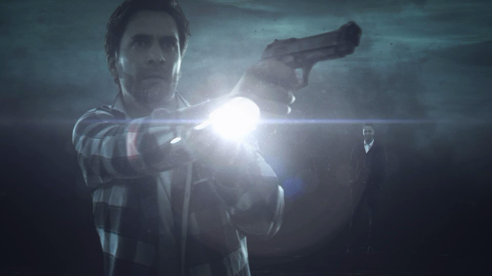
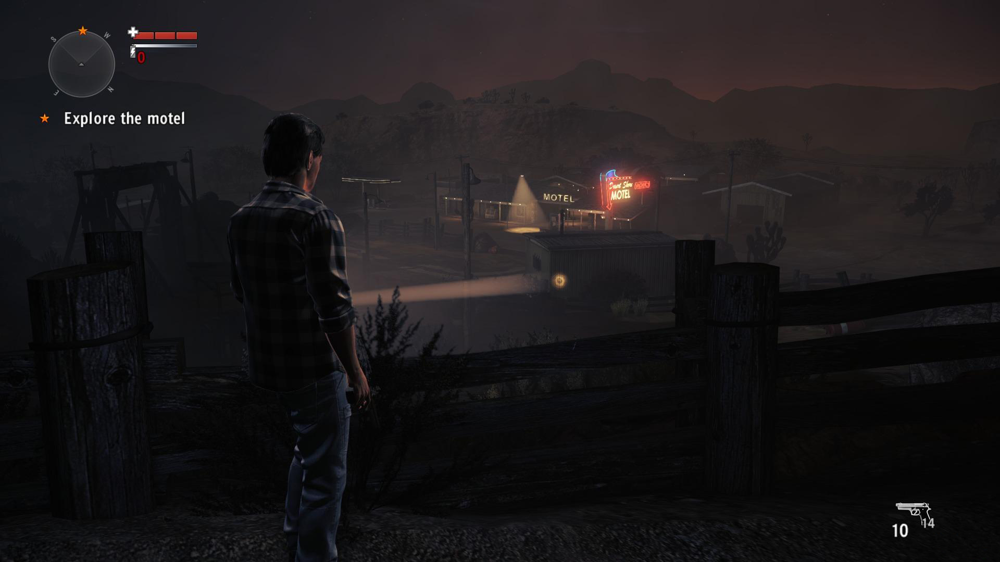
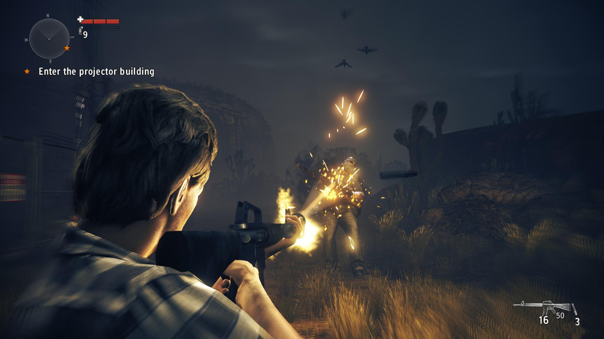

[Review] Alan Wake : American Nightmare
Living the american dream. Or in this case the American Nightmare. The DLC for the psychological thriller Alan Wake (you can read the review here) brought some good things for the fans but with some disappointments. The developers worked more on the action-shooter part of the game and became a little sloppy with the thing that made Alan Wake such a good game and that is the story. This time, you’re not in Bright Falls anymore, as apparently you were captured in the Dark Place for two good years. But in these two years, Alan managed to find himself a loophole, some kind of a backdoor to finally put an end to this nightmare and defeat the Darkness. As we were accustomed, this backdoor is also a piece of work of our beloved writer called The Return.
In the original game, the player found some TVs throughout the game, each one playing an episode of the fictional TV Show, “Night Springs”, which was based on the real show called The Twilight Zone. American Nightmare is also presented as an episode of “Night Springs” with Alan playing the Champion of Light and his doppelganger created by the dark forces, Mr.Scratch as The Herald of Darkness. Everything even happens in a desert place, in Arizona, a place not far from the actual Night Springs city.
But let’s talk more about this new character, Mr. Scratch, who was introducted in the story even from the final parts of the original game. He is an exact copy of Alan but with some minor or major differences, depends on how you want to take it. He represents everything dark inside Alan and the sum of all the bad rumours about the writer. Therefor he appears as a serial killer with some level of schizophrenia. His goal is simple, take over Alan’s life and destroy everything that he loves, all up to his wife, Alice. He has supernatural powers and the ability to transport between the real world and the place where Alan is captured. The interactions between these two, all the crazy jokes that Scratch does in the video tapes seen on the TVs scattered throughout the levels and his all-crazy-all-funny attitude was a really big entertainment factor for me, always putting a smile on my face, despite the fact that this guy was, without any remorse, killing innocent people.
The game runs between three different levels, a motel close to an oil rig, an observatory and a drive-in theater. Alan has, with his writings, the power to change reality. To do so, he has to follow the manuscript pages and change some of the minor details of his surroundings, these little changes working like a chain-reaction, like an avalanche with the final result being the destruction of Mr. Scratch. You also interact with some episodic characters, like Emma Sloan at the motel, Dr. Rachel Meadows at the observatory and Serena Valdivia at the theater. They all dealt with Mr. Scratch before and they all mistake you with him. After you finish all the levels, you encounter Mr.Scratch who sends you back in time, a few hours ago, at the motel.
Here is where the game gets a little bit annoying. I don’t know if it was intentional or not but I started to feel the stress inside Alan when you have to repeat the same things all over again. I kinda started to admire the fact that he wasn’t giving up like I almost did a few times. Of course, the episodic characters help you as they remember some of the things that happened before the time-loop and you don’t have to do all the stuff. You get to repeat the same levels twice but with that considered, it still brought something new everytime. Perhaps it was the breath-taking action that made me forget sometimes that I was doing that the second or the third time. I don’t know. I just know that somehow it still worked and I didn’t delete the game before finishing it.
Maybe just the guys from Remedy could do something like that, force you to repeat the same things two times without you actually noticing that you’re repeating it. I think what kept me playing was the fact that I didn’t get the manuscript pages from the first attempt and I really needed them for the cool new weapons (I will talk more about them in a moment). In conclusion to the “story” part, it’s definitely weaker than what we were used to but it still kept me on my seat, at least for the magic of the characters.
| Good Parts | Bad Parts | Final Score |
|---|---|---|
| Captivating story(one of the best I could say) | The gameplay gets kind of too repetitive to the end of the game | 9/10 |
| Solid characters | ||
| Professional voice acting | Reports of minor FPS Lagspikes on some video cards | |
| Awesome soundtrack having a great synergy with the game itself |